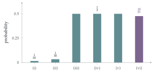

A bag contains eleven small discs, which are identical except that six of the discs are blank and five of the discs are numbered, using the numbers \(1\), \(2\), \(3\), \(4\) and \(5\). The bag is shaken, and four discs are taken one at a time without replacement.
Calculate the probability that:
all four discs taken are numbered;
all four discs taken are numbered, given that the disc numbered “3” is taken first;
exactly two numbered discs are taken, given that the disc numbered “3” is taken first;
exactly two numbered discs are taken, given that the disc numbered “3” is taken;
exactly two numbered discs are taken, given that a numbered disc is taken first;
exactly two numbered discs are taken, given that a numbered disc is taken.
The hook
“Given that” is the most dangerous phrase in probability. The last four parts of this question sound almost identical: the disc numbered 3 is taken first; the disc numbered 3 is taken; a numbered disc is taken first; a numbered disc is taken. Three of them give the answer \(\frac12\). The fourth does not.
The difference is exactly the one behind the famous “boy or girl” puzzle (a family has two children, at least one is a boy; what is the chance both are boys?), which has tripped up generations of students and a fair number of professional mathematicians. The lesson is that a condition is a precise statement about which outcomes remain possible, and the way information was obtained matters as much as the information itself.
Before you start
Four discs are taken from eleven. Does the order of drawing matter for the event “all four are numbered”? How many equally likely sets of four discs are there?
Every set of four discs is equally likely to be the set drawn, so we can ignore order: there are \(\binom{11}{4} = 330\) equally likely sets.
Working it through
Stage 1 No condition
There are \(\binom54 = 5\) sets of four numbered discs, so \[\mathrm{P}(\text{all four numbered}) = \frac{5}{330} = \frac{1}{66}.\]
Stage 2 The 3 comes first
Once the disc numbered 3 has been drawn first, what are the remaining three draws?
The other three discs form a random set of three from the remaining ten (four numbered, six blank), all \(\binom{10}{3} = 120\) sets equally likely. So \[\text{(ii)}\quad \frac{\binom43}{120} = \frac{4}{120} = \frac{1}{30}, \qquad \text{(iii)}\quad \frac{\binom41\binom62}{120} = \frac{4 \times 15}{120} = \frac12,\] since in (iii) exactly one of the other three must be numbered.
Stage 3 The 3 is taken (at some point)
Does it matter when the disc numbered 3 was drawn? Given that 3 is among the four, what can you say about the other three?
By symmetry, given that the set of four contains the 3, the other three discs are a random set of three from the remaining ten, exactly as in Stage 2. So (iv) is also \(\frac12\).
Stage 4 A numbered disc comes first
Given that the first disc is numbered (whichever number it is), the other three are again a random set of three from the remaining ten discs, of which four are numbered and six blank. So (v) is \(\frac12\) too.
Stage 5 A numbered disc is taken
Now the condition is “at least one of the four is numbered”. Is that the same as any of the previous conditions? How many of the 330 sets satisfy it?
This condition is different: it does not single out any particular disc. Only \(\binom64 = 15\) sets have no numbered disc, so \(315\) satisfy the condition. Of these, \(\binom52\binom62 = 10 \times 15 = 150\) contain exactly two numbered discs. So \[\text{(vi)}\quad \frac{150}{315} = \frac{10}{21}. \qed\]
Why is (vi) different from (v)? In (v) we know which disc is numbered (the first), and the other three are unconstrained. In (vi) we only know that some disc is numbered. Sets with three or four numbered discs satisfy “some disc is numbered” in more ways, so they are not under-represented the way they are in (v).

Looking back
A condition restricts the sample space. \(\mathrm{P}(A \mid B)\) is the proportion of outcomes in \(B\) that are also in \(A\).
Symmetry saves work. Whether the 3 was drawn first or at some point made no difference, because all positions are alike.
“A specific one” is not “at least one”. Conditions that sound alike can select quite different sets of outcomes.
What’s really going on
The boy-or-girl puzzle
Martin Gardner posed this in 1959: Mr Smith has two children, at least one of whom is a boy; what is the probability that both are boys? Listing the equally likely families BB, BG, GB, GG and removing GG leaves three, of which one is BB: the answer is \(\frac13\). But if we know that the elder child is a boy, the answer is \(\frac12\). These are parts (vi) and (v) of our question in miniature. Gardner later admitted that the question as he first posed it was ambiguous: it depends on how we came to know that there is a boy. If we met one of the children at random and he was a boy, the answer is \(\frac12\); if we asked “do you have at least one son?” and were told yes, it is \(\frac13\). Probability depends on the process that produced the information, not just the information.
Monty Hall
The same lesson underlies the most argued-about puzzle in probability. On a game show, a car is behind one of three doors. You pick door 1. The host, who knows where the car is, opens door 3 to reveal a goat, and offers you the chance to switch to door 2. Should you? Yes: switching wins with probability \(\frac23\). The host’s choice of door is not random; it depends on where the car is, and that carries information. When Marilyn vos Savant gave this answer in a magazine column in 1990, she received thousands of letters telling her she was wrong, some from mathematicians. A computer simulation, or a careful list of the equally likely cases, settles it.
Conditional probability was put on a systematic footing by Thomas Bayes, whose essay was published after his death in 1763, and by Pierre-Simon Laplace, who in 1774 stated the rule now called Bayes’ theorem in its general form. Andrey Kolmogorov’s axioms of 1933, which every university course now starts from, define \(\mathrm{P}(A \mid B) = \mathrm{P}(A \cap B)/\mathrm{P}(B)\), and the rest of probability theory is built on that definition. The next section, Section 12.2, shows what Bayes’ theorem does in practice.
The thinking skill
Before computing a conditional probability, write down exactly which outcomes satisfy the condition. Ask how the information was obtained.
At university, conditional probability and conditional expectation are among the most important tools in probability and statistics, and the most frequent source of errors. Writing out the sample space, at least for a small case, is the best defence.
Try this next
Generalise. With \(b\) blank and \(n\) numbered discs, and \(k\) drawn, show that the answers to (iv) and (v) are always equal, and find when (vi) equals them.
Boys born on Tuesday. A family has two children, and at least one is a boy born on a Tuesday. Show that the probability that both are boys is \(\frac{13}{27}\). (List the \(14 \times 14\) equally likely possibilities, or count cleverly.)
Monty Hall. Verify the \(\frac23\) by listing outcomes. What if the host does not know where the car is, opens one of the other doors at random, and it happens to show a goat?
Two aces. A bridge hand of \(13\) cards contains at least one ace. What is the probability that it contains at least two? Compare with the probability given that it contains the ace of spades.
Further reading
Jason Rosenhouse, The Monty Hall Problem (Oxford University Press). The puzzle, its history and its many variations.
Geoffrey Grimmett & Dominic Welsh, Probability: An Introduction (Oxford University Press), the chapters on conditional probability.
Joseph Blitzstein & Jessica Hwang, Introduction to Probability (CRC Press; free online). Excellent on conditioning, with many paradoxes.